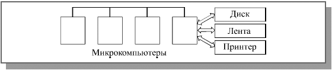

Затем появились персональные компьютеры, которые отличались от первых микрокомпьютеров тем, что имели полный комплект достаточно развитой для полностью автономной работы периферии: магнитные диски, принтеры, не говоря уже о более совершенных средствах интерфейса пользователя (мониторы, клавиатуры, мыши и т.д.). Периферия подешевела и стала по цене вполне сравнимой с компьютером. Казалось бы, зачем теперь соединять персональные компьютеры (рис. 1.3)? Что им разделять, когда и так уже все разделено и находится на столе у каждого пользователя? Интеллекта на месте хватает, периферии тоже. Что же может дать сеть в этом случае?
